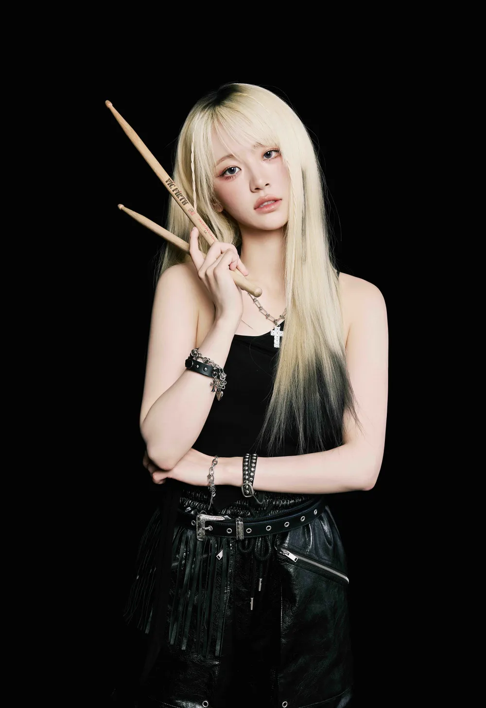

01 / DRUMS
CHODAN
쵸단
QWER의 드러머 Q 쵸단
홍지혜 | 1998년 11월 1일 | 서울특별시 중구 | INFP
쓰리와이코프레이션 소속 4인조 걸밴드 QWER의 멤버이자 대한민국의
인터넷 방송인 2017년에 성신여자대학교 실용음악과 드럼 전공으로
입학했다. 음악 가족인 관계로 기타를 독학했고 피아노는 6년 동안
배웠다고 한다. 2020년 트위치 스트리머로 데뷔하였고, 이후 걸밴드
QWER의 멤버로 2023년에 데뷔하였다.
